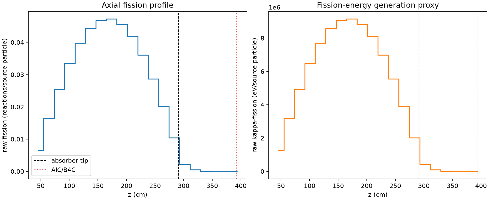
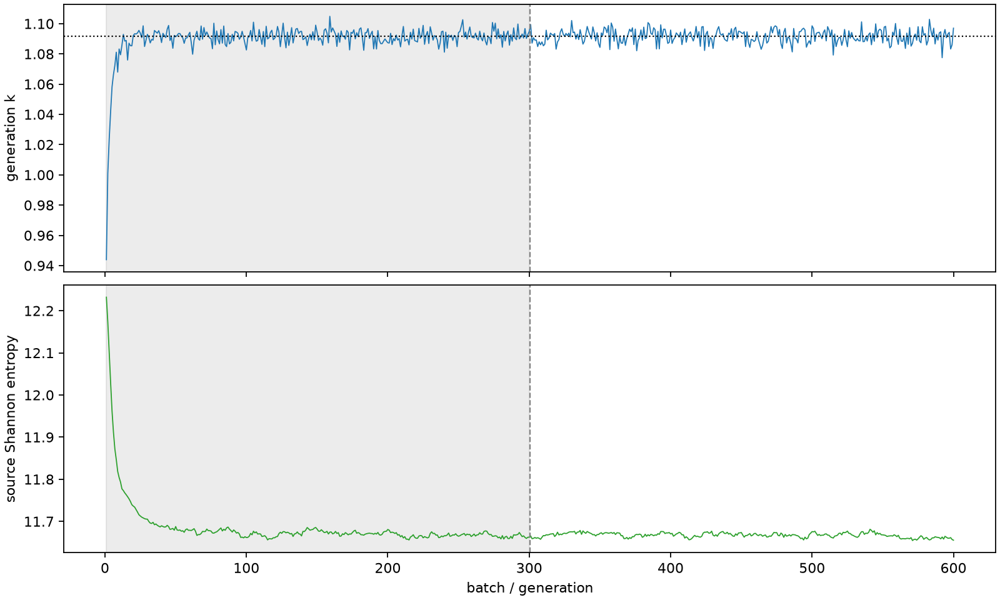

| field | value |
|---|---|
| experiment | V2-STAGE_256_OGRENCI_04-0010 |
| k | 1.091769901202561 |
| MC standard error | 0.0001774125040624236 |
| seconds | 1019.1712317100028 |
| acceptance | not_assessed |
| convergence | review_required |
Completed is output integrity only; physical and statistical review required. Zero tallies do not prove zero production or zero uncertainty.
| diagnostic | value |
|---|---|
| geometric fuel voxels | 5280 |
| zero fission tally voxels | 4 |
| low signal fuel voxels | 788 |
| low signal fission share | 6.441887303068741e-05 |
| low signal kappa share | 6.445560154408796e-05 |
| important fission share | 0.9501310373312091 |
| previous filter included | 4492 |
| duration estimate s | 1562.5173488400023 |
| actual minus estimate s | -543.3461171299996 |
| fission relative MC error | statistics |
|---|---|
| all_geometric_fuel | {"voxels": 5280, "positive_mean_voxels": 5276, "zero_mean_voxels": 4, "undefined_relative_error_voxels": 4, "median": 0.010248590997541593, "p95": 0.6234298165879729, "maximum": 1.0000000000000002} |
| low_signal | {"voxels": 788, "positive_mean_voxels": 784, "zero_mean_voxels": 4, "undefined_relative_error_voxels": 4, "median": 0.47635425554952376, "p95": 0.9867237470711595, "maximum": 1.0000000000000002} |
| important_95pct | {"voxels": 3127, "positive_mean_voxels": 3127, "zero_mean_voxels": 0, "undefined_relative_error_voxels": 0, "median": 0.007928185144915525, "p95": 0.01159221295876775, "maximum": 0.0146643764615604} |
| outside_previous_filter | {"voxels": 788, "positive_mean_voxels": 784, "zero_mean_voxels": 4, "undefined_relative_error_voxels": 4, "median": 0.47635425554952376, "p95": 0.9867237470711595, "maximum": 1.0000000000000002} |
| kappa_fission relative MC error | statistics |
|---|---|
| all_geometric_fuel | {"voxels": 5280, "positive_mean_voxels": 5276, "zero_mean_voxels": 4, "undefined_relative_error_voxels": 4, "median": 0.010236504998232275, "p95": 0.623104592237155, "maximum": 1.0000000000000002} |
| low_signal | {"voxels": 788, "positive_mean_voxels": 784, "zero_mean_voxels": 4, "undefined_relative_error_voxels": 4, "median": 0.47548850390421327, "p95": 0.9867112398803971, "maximum": 1.0000000000000002} |
| important_95pct | {"voxels": 3127, "positive_mean_voxels": 3127, "zero_mean_voxels": 0, "undefined_relative_error_voxels": 0, "median": 0.007917494169403213, "p95": 0.01157862949983085, "maximum": 0.01464433915239293} |
| outside_previous_filter | {"voxels": 788, "positive_mean_voxels": 784, "zero_mean_voxels": 4, "undefined_relative_error_voxels": 4, "median": 0.47548850390421327, "p95": 0.9867112398803971, "maximum": 1.0000000000000002} |
| axial bin | fission share | kappa-fission share |
|---|---|---|
| 1 | 0.01464501555630369 | 0.014645719084624984 |
| 2 | 0.03696125578604749 | 0.03696102968789813 |
| 3 | 0.05710954324766525 | 0.05710939210356364 |
| 4 | 0.07497223098802851 | 0.07497197872281161 |
| 5 | 0.0892690062074569 | 0.08926881842155747 |
| 6 | 0.09939808083222854 | 0.09939800286700975 |
| 7 | 0.10508125236534686 | 0.10508066713654897 |
| 8 | 0.10606288034924483 | 0.10606244488141003 |
| 9 | 0.1021960525143741 | 0.10219563387959356 |
| 10 | 0.09393341003138696 | 0.09393294888616725 |
| 11 | 0.08102382149158022 | 0.08102345078804361 |
| 12 | 0.0644205214048266 | 0.06442035617005672 |
| 13 | 0.045153695375836536 | 0.045153263094197114 |
| 14 | 0.023415124254686347 | 0.023415559878421418 |
| 15 | 0.004934269706479793 | 0.004936256284421003 |
| 16 | 0.0011050013054679482 | 0.0011054972854412308 |
| 17 | 0.0002535796679307752 | 0.0002536845118806784 |
| 18 | 5.1819409255437326e-05 | 5.184620928614102e-05 |
| 19 | 1.1237327646384612e-05 | 1.1247291006011227e-05 |
| 20 | 2.2021782068233107e-06 | 2.2028160606356933e-06 |
Histories include the inactive-to-active transition at batch 300. kappa-fission approximates fission energy production, not total heat deposition.

